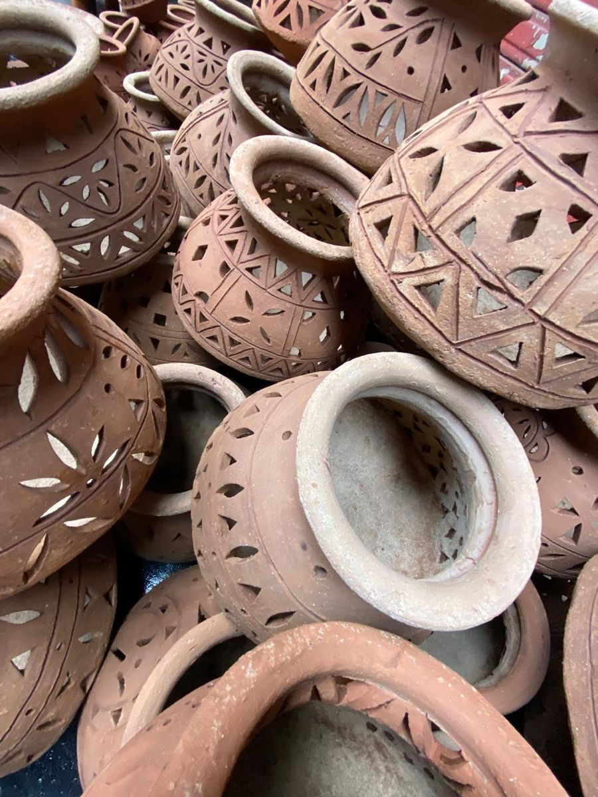

Dharavi Tour
The square mile that works, walked with someone born there

Kumbharwada is the potters' quarter of Dharavi. The kilns there have been fired by the same families for generations, and rows of clay pots dry in the lanes before market day. A few streets away, sewing machines run in garment units, papads dry on rooftop racks, and workers in the recycling compounds sort plastic by colour and grade — a big share of Mumbai's plastic waste comes through here to start a second life. Add it all up and Dharavi's combined annual turnover is often estimated at as much as a billion US dollars. This walk is about that: work, trade and skill packed into less than a square mile.
It matters who leads it. Pooja was born and raised in Dharavi. The workshops on the route belong to people she knows; the lanes are the ones she grew up in. That is also why one rule is firm: no photographs of people. These are homes and workplaces, not exhibits, and everyone here gets the courtesy you would expect on your own street. You visit workshops, never anyone's home, and you come as a guest.
You'll hear about daily life as well as industry — the schools, the festivals, the rents, the way ten trades share one lane — and you can ask Pooja anything as you walk. It is the heart of Mumbai most visitors never see, told by someone it belongs to.
The day, stop by stop
- Meeting pointMeet Pooja at the edge of Dharavi (or take the pick-up option) — details agreed on WhatsApp.
- Recycling compoundsPlastic is sorted by colour and grade, shredded and washed — a big share of Mumbai's plastic waste starts its second life in these rooms.
- Leather workshopsWatch hides become bags, belts and jackets in small units whose goods sell far beyond the neighbourhood.
- KumbharwadaThe potters' quarter — working kilns, wheels turning, and rows of clay pots drying in the lanes.
- Garment and papad unitsSewing lines at full tilt, and papads drying on rooftop racks in the sun.
- Chai to finishSit down for a cutting chai and ask Pooja anything you've been saving up.
Prices
All prices are per person — pick an option and confirm it on WhatsApp.
- Group tour₹800
- Private tour₹1,700
- Group tour, with pick-up & drop₹2,800
- Private tour, with pick-up & drop₹3,500
Included
- Pooja as your guide — born and raised here
- Bottled water
- Around 15% of the fee given back into the community
- Pick-up and drop-off, if you choose that option
Not included
- Anything you buy from a workshop
- Meals beyond the chai stop
What to bring
- Closed, comfortable shoes — lanes are narrow and surfaces uneven
- Light, modest clothing, plus a cap or scarf against the sun
- A little cash for chai or anything you buy from a workshop
Good to know
- Group departures or private — all four prices above, per person
- No photography of people on the walk — see the ground rules below
- You visit workshops and lanes, never anyone's home
- Mornings are cooler, and the running order can flex around your day
- Monsoon season (roughly June to September) can reshuffle the route
- Not suited to prams; some lanes are narrow with steps — ask about mobility needs
Fancy this one?
Message Pooja with your dates — she'll answer questions before you commit to anything.
Enquire on WhatsApp